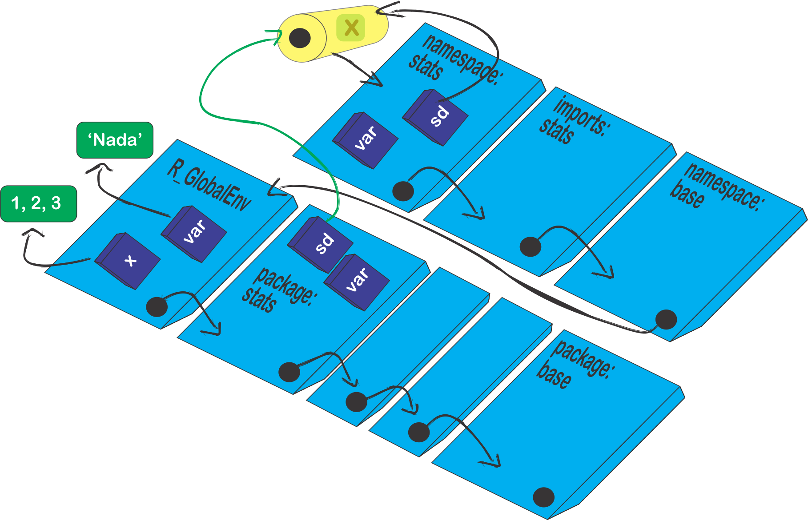

Configurando os arquivos básicos de um pacote
Source:vignettes/conf_files_pkg.Rmd
conf_files_pkg.RmdIntrodução
Os arquivos do pacote, mencionados na Subseção Esqueleto básico de um pacote R, serão agora editados, uma vez que o RStudio constroi apenas um modelo para os arquivos.
Inicialmente, iremos apresentar duas rotinas para a construção do pacote:
# Sem edição do pacote `roxygen2`
aritmetica <- function (a, b, op) {
# op: divisi, multi, soma, subtra
if (op == "divisi") x <- divisi(a, b)
if (op == "multi") x <- multi(a,b)
if (op == "soma") x <- soma(a,b)
if (op == "subtra") x <- subtra(a,b)
return(x)
}
# Funcoes auxiliares
# Soma
soma <- function (a, b) {
calculo <- a + b
return(calculo)
}
#Subtracao
subtra <- function (a, b) {
calculo <- a - b
return(calculo)
}
# Multiplicacao
multi <- function (a, b) {
calculo <- a * b
return(calculo)
}
# Divisao
divisi <- function (a, b) {
calculo <- a / b
return(calculo)
}A ideia dessas funções é muito simples, apresentar as quatro operações básicas entre dois números. Claro que não faz sentido desenvolver um pacote para algo trivial. Contudo, o enfoque é entender as peculiaridades do processo de construção de um pacote.
E um passo muito interessante ocorre sobre essas duas rotinas, pois uma iremos exportar e a outra não. Isto significa que ao carregar o pacote, funções do pacote que não são exportáveis, tornam-se invisíveis, podendo ser observadas apenas abrindo o arquivo nome_pacote.tar.gz. Às vezes, desejamos omitir algumas funções que são auxiliares para o nosso código. Isso significa, que elas sozinhas não terão utilidades. Dessa forma, não se faz necessário apresentá-las. Em outras situações, o que fazemos é omitir ou dificultar a visualização de determinadas funções, por algum interesse, mesmo sabendo que o código é aberto.
No nosso caso, apenas a função aritmetica será exportável. Perceba, que o cerne do pacote está na rotina auxiliar.R, pois é nela que temos as quatro funções para as operações aritméticas. Veremos mais a frente como definir a exportação de funções em um pacote.
Atualizando as funções do pacote
Como já falado na Seção Construindo o esqueleto de um pacote R, o subdiretório R/ é o local para armazenar as rotinas do pacote. Dessa forma, vamos fazer as atualizações retirando os arquivos .R criados pelo RStudio, e inserindo as rotinas do pacote (aritmetica.R e auxiliar.R). Lembre-se das boas práticas de como escrever um código R.

Editando o arquivo DESCRIPTION
Quando nós criamos um projeto de pacote usando o RStudio, um arquivo chamado DESCRIPTION é criado no diretório do projeto do pacote. Talvez um dos mais importantes arquivos do pacote, pois esse arquivo contém os metadados sobre as característica do pacote, como o seu nome, título, versão, autor, descrição, licença, dentre outras opções.
A estrutura básica é que cada linha se inicia com o nome do campo seguido de “:”, posteriormente, se insere a atribuída a esse campo. Segundo o manual Writing R extensions, os campos Package, Version, Licence, Description, Title, Author e Mantainer são obrigatórios . Todos os outros campos são opcionais. Todo o DESCRIPTION deve ser escrito em ASCII, isto é, caracteres sendo letras e números. Para utilizar caracteres diferentes, deve ser acrescentado o campo Encoding e informar o tipo de codificação. No pacote meupacoter, por exemplo, foi utilizado Encoding: UTF-8.
Package: nome do pacote
Title: O que o pacote faz (Em uma linha)
Version: 0.0.0.9000
Authors@R:
person(given = "First",
family = "Last",
role = c("aut", "cre"),
email = "first.last@example.com",
comment = c(ORCID = "YOUR-ORCID-ID"))
Maintainer: Nome e email do mantenedor do pacote
Description: O que o pacote faz (Em um parágrafo).
License: Qual a licença que você usaIremos discutir a ideia sobre alguns desses campos a seguir.
Nome do pacote
A discução sobre o nome do pacote foi realizado na subseção Escolha do nome e logo do pacote. O campo para o nome é Package, com as seguintes características (Writing R extensions):
- deve conter somente letras, números e ponto;
- ter pelo menos dois caracteres;
- começar com uma letra
- não terminar com um ponto.
Esse campo não deve ser utilizado para explicar o que o pacote faz. Para isso use o campo Description.
Título do pacote
O campo para o título do pacote é Title. Nele deve conter uma pequena descrição do pacote em uma única linha. Seguem alguns requisitos (Writing R extensions):
- Não use marcações for do pacrão ASCII;
- Não finalize o título com um ponto;
- Não repita o nome do pacote no título;
- Se usar a referência de outros pacotes no título, use aspas simples (‘
’), se referenciar livros, aspas duplas (“nome_livros”); - Geralmente limitado em 65 caracteres.
Controle de versão do pacote
O campo responsável pela versão do pacote é Version. Deve ser uma sequência de ao menos dois números não negativos inteiros separados por um ponto (‘.’) ou traço (‘-’). Por exemplo, 1.1 e 0.9.1-10 são versões válidas, mas essas versões 2 ou 2.0-devel não são válidas. No livro R packages, temos uma descrição detalhada e abordada a seguir. Usaremos também uma abordagem feita pelo COMBINE, pelo material R package workshop.
Podemos dizer que a estrutura do controle de versão é formado por uma sequência de quatro dígitos: <maior>.<menor>.<trecho>.<desenvolvimento>. Vejamos,
numeric_version("1.9") == numeric_version("1.9.0")
#> [1] TRUE
numeric_version("1.9") == numeric_version("1.9.0.0")
#> [1] TRUEIsso significa dizer, se usarmos ao menos dois dígitos, os outros dígitos serão completados por zero (default). Vejamos o que significa cada dígito:
- Dígito
<maior>: esse dígito é alterado quando o pacote passa por uma mudança significativa na atualização; - Dígito
<menor>: esse dígito é alterado quando ocorre alguma funcionalidade foi adicionada ao pacote, como criação de funções, atualizações de funções com os códigos existentes, etc; - Dígito
<trecho>: esse dígito se altera quando ocorre correções de erros (bugs) no pacote, mas não é acrescido nada de novo. Uma forma interessante de encontrar esses erros é criar uma página de problemas do pacote, e à medida que ocorre a experiência do usário com o pacote, alguns problemas podem ocorrer que não eram previstos pelo desenvolvedor. Dessa forma, esses problemas podem ser postados nessa página específica. No Github há uma aba chamada issues nos repositórios criados, que é específico para isso, e o link dessa página pode ser inserido no campoBugReportsno arquivo DESCRIPTION; - Dígito
<desenvolvimento>: o dígito 9000 é utilizado quando o pacote está em desenvolvimento. Com essa codigifcação, podemos esperar mudanças muito rápidas no pacote.
Caso deseje alterar algum dos dígitos, o desenvolvedor pode alterar diretamente no arquivo DESCRPTION, ou usando (Exemplo realizado para o meupacoter):
usethis::use_version()
Setting active project to '~/meupacoter'
There are uncommitted changes. Do you want to proceed anyway?
1: Negative
2: Nope
3: Yup
Selection: "<Escolhe uma das opções e digita: 1, 2 ou 3>"
Current version is 0.0.0.9000.
Which part to increment? (0 to exit)
1: major --> 1.0.0
2: minor --> 0.1.0
3: patch --> 0.0.1
4: dev --> 0.0.0.9001
Selection: "<Escolhe uma das opções e digita: 1, 2 ou 3>"A primeira versão de um pacote que inicia o seu desenvolvimento é 0.0.0.9000.
Nós, particularmente, estamos usando a seguinte estratégia para o meupacoter, como o pacote está em desenvolvimento, e sua finalidade é ensinar a desenvolver pacotes, o que pretendemos é criar páginas web com o passo-a-passo. Assim, estamos usando o quarto dígito 9000. Os acréscimos realizados sob o GitHub, que levam em consideração as páginas web, estão alterando o dígito menor, porque a primeira versão quando for submetida ao CRAN, será 1.0.0, de modo que o pacote estará estável, não haverá mais alterações no dígito maior (assim, esperamos!), apenas nos demais.
De fato, as sugestões dos números de versão mencionadas por R packages e R package workshop ocorrem a cada alteração lançada ao CRAN, e o controle dos três dígitos para a versão, realmente é interessante. Entretanto, achamod que seguir a ideia dos três dígitos é interessante, mas não que isso fique martirzando a sua cabeça, uma vez que nos manuais do CRAN não há condições restritivas para essas escolhas. Caso deseje detalhes, é só consultar Writing R extensions, DESCRIPTION.
Autor e Mantenedor
Os campos responsáveis pela criação do pacote, de forma direta ou indireta, são Autor ou Authors@R e Mantainer. Começando pelo último, este campo representa a pessoa responsável por manter o pacote sobre o CRAN, correção, atualização, etc. Apenas ele tem esse poder e deve ser uma pessoa e não uma empresa, de modo que seja válido enquanto o pacote estiver disponível no CRAN. O campo Autor ou Authors@R representa as pessoas que desenvolveram o pacote. O que diferencia esses dois campos é a forma de inserir as informações. Para o campo Authors@R, ainda pode ser inserido funções adicionais aos autores, algo como especifícações do que cada autor contribuiu de fato ao desenvolvimento do pacote. Apresentamos quatro funções importantes:
-
aut: autores que fizeram contribuições significativas ao pacote; -
cre: mantenedor do pacote que estará responsável para resolver possíveis problemas do pacote; -
ctb: desenvolvedores que fizeram contribuições menores; -
cph: detentor dos direitos autorais, quando a autoria não é do autor, geralmente uma empresa.
Se desejar uma especificação mais detalhada sobre o seu papel como desenvolvedor, consulte mais siglas em full list of roles
A forma básica de inserir os dados no campo Mantainer o primeiro e o último nome, seguido do email entre (“< >”), por exemplo, Mantainer: Ben Deivide <ben.deivide@gmail.com>.
Para inserir as informações no campo Author, basta digitar o nome dos autores separados por vírgula, por exemplo: Author: Ben Deivide, Daniel Furtado, Diego Arthur.
Por fim, como já falado acima, uma descrição mais completa pode ser usando o campo Authors@R, inserindo a especificação de cada autor ao desenvolvimento do pacote, usando as siglas acima. E ainda mais, não será necessário inserir no arquivo DESCRIPTION o campo Mantainer. Veremos a seguir, um exemplo do pacote midrangeMCP:
Authors@R: c(
person(given = "Ben",
family = "Deivide",
email = "ben.deivide@ufsj.edu.br",
role = c("aut", "cre"),
comment = c(ORCID = '0000-0001-7019-8794')),
person(given = "Daniel",
family = "Furtado",
email = "danielff@dex.ufla.br",
role = "aut",
comment = c(ORCID = '0000-0002-4371-5239')),
person(given = "Diego",
family = "Arthur",
email = "digo.arthur@hotmail.com",
role = "ctb"))Dentro do campo Authors@R, inserimos para cada desenvolvedor, uma descrição dentro da função chamada person, do pacote utils, veja o resultado da sua execução:
person(given = "Ben",
family = "Deivide",
email = "ben.deivide@ufsj.edu.br",
role = c("aut", "cre"),
comment = c(ORCID = '0000-0001-7019-8794'))
#> [1] "Ben Deivide <ben.deivide@ufsj.edu.br> [aut, cre] (<https://orcid.org/0000-0001-7019-8794>)"Na função person o primeiro argumento representa o primeiro nome do autor (given) e o segundo (family), o último nome. Posteriormente, temos o argumento para o email (email), e em seguida, o argumento para identificar a especificação do autor para o pacote (argumento role). Por fim, acrescentamos em comment, uma informação adicional que foi o ORCID dos respectivos autores. Percebam pelas regras atribuídas aos desenvolvedores que Ben Deivide e Daniel Furtado são autores (regra 'aut'), e o primeiro é também mantenedor (regra 'cre'). No caso de Diego Arthur, como o seu desenvolvimento teve menores contribuições ao pacote, a regra foi 'ctb'. Dessa forma, não será necessário inserir o campo Mantainer.
Descrição
O campo responsável no arquivo DESCRIPTION para descrever e detalhar o que faz o pacote é Description. Deve conter apenas um parágrafo. Vejamos mais algumas informações (R packages):
- Evite iniciar a descrição com o nome do pacote, ao invés, use Esse pacote… ou algo similar;
- Quando a descrição estiver em mais de uma linha, cada linha deve conter no máximo 80 caracteres, e a partir da segunda linha, dê 4 espaços para iniciá-la;
- Assim como no campo
Title, devemos usar aspas duplas (“texto”) para referenciar livros, artigos, aspas simples para palavras que não estão em inglês, incluindo nomes de pacotes, softwares externos, etc. - Para utilização de sites, use aspas simples com colchetes angulares, isto é, ‘https://www.r-project.org’.
Vejamos um exemplo do campo Description no arquivo DESCRIPTION do pacote midrangeMCP:
Description: Apply tests of multiple comparisons based
on studentized 'midrange' and 'range' distributions.
The tests are: Tukey Midrange ('TM' test),
Student-Newman-Keuls Midrange ('SNKM' test),
Means Grouping Midrange ('MGM' test) and
Means Grouping Range ('MGR' test). The articles of these
tests are in the submission phase, and we will soon update
the references.Campos opcionais ao DESCRIPTION
Alguns campos adicionais são interessantes e deixamos na tabela abaixo para consulta (Writing R extensions, DESCRIPTION).
| Campos opcionais | Finalidade |
|---|---|
Data |
Insere a data atualizada para submissão ao CRAN. Essa data é preferível deixar não ser colocada. Já tivemos rejeição de pacotes, simplesmente porque a data estava desatualizada. |
Depends |
Campo utilizado para fornecer uma lista de pacotes, separados por vírgula, que o seu pacote depende. Esses pacotes serão também instalados quando solicitar a instalação de seu pacote pela função install.packages. Ao carregar e anexar o seu pacote, usando library ou require, os pacotes em Depends também serão anexados, isto é, todas as funções do pacote nesse campo estará disponível no caminho de busca. Para mais detalhes, ver Subseçções Campo Depends e Uso de pacotes dependentes em Imports ou Depends?. |
Imports |
Campo utilizado para fornecer uma lista de pacotes, separados por vírgula, que o seu pacote depende. Contudo, ao carregar e anexar o seu pacote, os pacotes em Imports serão apenas carregados. Funções que usamos os operadores “::” ou “:::”, também deverão ser listados aqui, ou nos campos Suggests ou Enhances. Para mais detalhes, ver Subseção Uso de pacotes dependentes em Imports ou Depends?. |
Suggests |
Esse campo usa a mesma sintaxe do campo Depends e lista os pacotes que não são necessariamente necessários. Geralmente são pacotes utilizados nos exemplos de documentação de ajuda do pacote (arquivos do subdiretório man/~.Rd), ou na descrição de um conjunto de dados inseridos no pacote; no auxílio dos tutoriais (vignettes), dentre outras situações, que não impede o bom funcionamento do pacote. |
Enhances |
Campo que lista os pacotes que forncem um aprimoramento do pacote em questão, por exemplo, forncendo métodos para as classes desses pacotes ou maneiras de manipular objetos. |
SystemRequirements |
Dependências externas ao sistema R devem ser listadas no campo SystemRequirements, sendo detalhados essa integração no arquivo README. Para mais detalhes veja a Subseção Uso do campo SystemRequirement. |
NeedsCompilation |
Campo utilizado para identíficar códigos que necessitam de compilação antes da instalação do pacote. Nesse caso o campo deve assumir NeedsCompilation:yes. Caso contrário, se o pacote ao ser instalado em quaiquer plataformas e não precisar ser instalado ferramentas adicionais, use NeedsCompilation:no, esse é o padrão. Geralmente quando usamos o comando R CMD build para a compilação do pacote binário para a utilização no SO Windows, e esse pacote apresenta o subdiretório src, usamos NeedsCompilation:yes. Quando usamos esse tipo de compilação, não há no arquivo DESCRIPTION o campo Authors@R, por exemplo, e sim, os campos Mantainer e Author. |
License |
Licença R, Writing R extensions,DESCRIPTION |
Copyright |
Usado quando o detentor dos direitos autorais não forem os autores. Se desejar, poderá inserir um arquivo (COPYRIGHTS) no pacote para um maior detalhamento. O convencional é usar o subdiretório inst, isto é, inst/COPYRIGHTS.Ver Seção Subdiretórios adicionais. |
Additional_repositories |
O campo Additional_repositories é uma lista separada por vírgulas de URLs de repositório onde os pacotes nomeados em outros campos podem ser encontrados. |
LinkingTo |
Um pacote que deseja fazer uso de arquivos de cabeçalho em outros pacotes para compilar seu código C/C++ precisa declará-los como uma lista separada por vírgulas no campo LinkingTo no arquivo DESCRIPTION. Para detalhes veja o Git do pacote BH. |
BugReports |
Campo que apresenta uma única URL específica para se reportar a erros do pacote. Uma das opções de hospedagem é via Github, na seção issues, veja a seção Criar uma website para o pacote. Caso deseje especificar outro email para os possíveis erros, use o campo Contact para isso. |
URL |
Campo para especificas uma listas de URLs separados por vírgula, que hoespeda a sua página pessoal ou a página do pacote. Uma das opções de hospedagem é via Github. Veja a seção Criar uma website para o pacote. |
LazyData |
Campo lógico (TRUE ou FALSE), para para informar que existe um conjunto dados diponíveis no pacote para utilização. |
KeepSource |
O campo lógico KeepSource controla se o código do pacote é originado usando keep.source = TRUE ou FALSE: pode ser necessário excepcionalmente para um pacote projetado para ser sempre usado com keep.source = TRUE. Para mais detalhes, Writing R extensions, DESCRIPTION. |
ByteCompile |
O campo lógico ByteCompile controla se o código do pacote deve ser compilado por byte na instalação: o padrão é compilar por byte. Isso pode ser sobrescrito instalando com o sinalizador --no-byte-compile. Para mais detalhes, Writing R extensions, DESCRIPTION
|
UseLTO |
O campo lógico UseLTO é usado para o SO Unix para indicar se o código-fonte no pacote deve ser compilado com Link-Time Optimization (veja Usando Link-Time Optimization); se o R foi instalado com --enable-lto (default) ou --enable-lto=R. |
Collate |
Campo utilizado para controlar a ordem de agrupamento para os arquivos de código R em um pacote quando estes são processados para instalação do pacote. Para mais detalhes, Writing R extensions, DESCRIPTION. |
BuildVignettes |
Campo utilizado para evitar a construção dos tutoriais (vignettes) ao construir o pacote usando R CMD check. Geralmente quando tem imagens grandes no pacote. Mas ao usar R CMD check --as-cran ele é criado, independente do valor para BuildVignettes. O que nós observamos para o RStudio é que mesmo esse campo com o valor. Essa opção, se o pacote roxigen2 está ativado para a construção de toda a documentação, os tutoriais (vignettes) são criados independentes dessa opção quando usamos o botão check, que tem o mesmo objetivo do comando R CMD check. na prática, esse campo não deve ser utilizado, a menos que o código do pacote não seja do tipo “código-aberto”. |
BuildVignetter |
Campo responsável para informar quais os pacotes que renderizarão os tutoriais (vignettes). Pode ser informado o nome de um pacote ou uma lista de nomes de pacotes separados por vírgula. Por exemplo, em meupacote, nós usamos VignetteBuilder: knitr. Como na instalação do pacote, isso não é obrigatório, usamod no campo Suggests: knitr, rmarkdown, uma vez que o pacote rmarkdown está apenas como sugestão pelo pacote knitr. |
Type |
Esse campo especifica a natureza do projeto. O padrão é assumir Type: Package. Por exemplo, podemos o pacote gnomeGUI, foi desativado pelo CRAN, com natureza frontend, isto é, Type: Frontend. |
OS_type |
Esse campo especifica os sistemas operacionais para os quais o pacote se destina, sendo as opções ‘unix’ ou ‘windows’, para indicar que o pacote só pode ser instalado em uma plataforma dessas plataformas. |
Encoding |
Campo utilizado para identificar a codificação do pacote, diferente de ASCII, usada no DESCRIPTION, NAMESPACE, arquivos do tipo R e .Rd. As opções são latin1, latin2 e UTF-8
|
Language |
Campo utilizado para identificar o idioma que o código foi escrito. O padrão de idioma é o Inglês. De acordo com R for Windows FAQ: Languages and Internationalization, as opções de idiomas são: Catalan (Catalão), Simplified Chinese (Chinês simplificado) Traditional Chinese (Chinês tradicional), Czech (Theco), Danish (Dinamarquês), Dutch (Holandês), Finnish (Finlandês), French (Francês), German (Alemão), Greek (Grego), Hebrew (Hebraico), Hungarian (Húngaro), Italian (Italiano), Japanese (Japonês), Korean (Coreano), Norwegian (Noroeguês), Polish (Polonês), Portuguese (Brazil) (Português brasileiro), Portuguese (Portugal) (Português de Portugal). O que sugerimos é que ao invés de utilizar o idioma nativo, pensando numa maior divulgação do pacote, o interessante é a internacionalização, ver Seção Internacionalização de pacotes. |
RdMacros |
Campo utilizado para conter uma lista, separada por vírgula, de pacotes a partir da qual o pacote atual importará definições de macro Rd. Esses pacotes também devem estar listados nos campos Imports (ou ‘Depends’). |
Outros campos não mencionados acima, podem ser utilizados. Por exemplo, campos como Note, Contact, MailingList, RoxygenNote, dentre outros.
Campo Depends
Vejamos mais algumas características sobre esse campo:
- Os pacotes no campo
Dependsserão instalados usando o argumentodependenciesna funçãoinstall.packages(pkgs = 'nome_pacote', dependencies = TRUE), quedependencies = TRUEimplica em instalar os pacotes doDepends, o dos camposImports,LinkingTo,Suggests; - O padrão do argumento
dependenciesda funçãoinstall.packageséNA, que implica em instalar os pacotes dos camposDepends,ImportseLinkingTo. Se desejar instalar tudo, basta usarinstall.packages(pkgs = 'nome_pacote', dependencies = c("Depends", "Imports", "LinkingTo", "Suggests", "Enhances")). Os pacotes no campoDependsserão carregados antes dos pacotes de interesse serem carregados, usandolibraryourequire; - Cada pacote no campo
Dependspor ser seguido de um parêntes identificando a versão desejada, isto é,Depends: MASS (>= 3.1). Contudo, ao inserir a versão, use apenas para os dois dígitos, evite inserir o dígito<trecho>(terceiro dígito); - Nesse campo também pode ser possível especificar determinada dependência da versão do R, por exemplo,
Depends: R (>= 3.6); - Pode ser repetido um pacote ou a versão R mais de uma vez, para limitar as versões aceitáveis;
- Evite comentários nesse campo, pois tanto a biblioteca de pacotes quanto os recursos de verificação do pacote R, usam esse campo, e isso pode acabar gerando problema ao bom funcionamento da linguagem;
Campo Imports
Como mencionado na Tabela acima, os pacotes no campo Imports não são anexados no caminho de busca. Isso acaba sendo interessante, porque o pacote desenvolvido acaba gerando menos conflito com funções de outros pacotes.
Uma recomendação interessante, R packages, é que ao usar o campo Imports, o pacote dependente não precisa ser mencionado em NAMESPACE caso seja utilizado o operador :: nas funções de seu pacote. Mais detalhes, ver Relação entre os campos Depends, Imports e o NAMESPACE.
Uso de pacotes dependentes em Imports ou Depends?
Basicamente, a diferença entre os campos Depends e Imports é que o primeiro apenas carrega o pacote, e o segundo anexa. Essa discussão foi bem documentada na Subseção Editando o arquivo NAMESPACE
Vejamos as regras gerais (Writing R extensions, DESCRIPTION):
- Um pacote dependente deve ser listado em apenas um campos dos campos
DependsouImports; - Pacotes listados no NAMESPACE usando
importouimportFromdevem ser listados sempre no campoImportse não emDepends; - Caso seja necessário a utilização de todas as funções de pacotes dependentes, para o bom funcionamento do seu pacote usando a função
libraryourequire, os pacotes dependentes devem adicionados no campoDepends; - Pacotes dependentes que utilizamos os seus conjuntos de dados em nosso pacote, devem ser listados no campo
Imports. - Não faz sentido inserir em
DependsouImportsa dependência sobre o pacote \(\color{red}{base}\), porque esse pacote, está sempre carregado e anexado, isto é, no caminho de busca.
O campo Depends atualmente deve ser usado raramente, apenas para a construção de pacotes em que desejamos que todas as funções dos pacotes dependentes estejam disponíveis para o usuário no caminho de busca, ao carregar o pacote desenvolvido, por questão de facilidade para o usuário. Caso contrário, o uso do campo Imports é mais coerente.
Uso do campo SystemRequirements
O campo SystemRequirements quando utilizado no DESCRIPTION, significa que algum código não R que está inserido em seu código, e precisa ser informado. Considere também que alguns pacotes já fizeram a integração de algumas linguagens, tais como: pacote reticulate (Phyton), pacote Rcpp (C++), pacote rJava (Java), pacotes tcltk hoje da base do R (Tcl/Tk), um complemento ao pacote anterior tcltk2 (Tcl/Tk), pacote RGtk2 (GTK+), dentre muitos outros, esses já fizeram a parte árdua de integração. Assim, necessitando de alguma dessas linguagens e usando esses pacotes como dependentes, não é necessário a utilização do campo SystemRequirements.
O subdiretório src é utilizado para códigos que precisam ser compilados, tais como C, C++, Fortran, dentre outros. O subdiretório exec ou inst é usado para inserir scripts que precisam ser interpretados, tais como Shell, BUGS, JavaScript, Matlab, Perl, php(amap), Phyton, Tcl. O caso da linguagem Java, o mecanismo é um pouco diferente, ver Writing R extensions§1.1.7. Observando os pacotes desenvolvidos, a convenção é usar no diretório inst, do tipo inst/perl, inst/tcl, etc. Vejam alguns exemplos de pacotes:
-
WriteXLS
/inst/Perl, veja o seu DESCRIPTION:
Package: WriteXLS
Version: 6.1.0
Date: 2020-11-20
Title: Cross-Platform Perl Based R Function to Create Excel 2003 (XLS) and Excel 2007 (XLSX) Files
Description: Cross-platform Perl based R function to create Excel 2003 (XLS) and Excel 2007 (XLSX)
files from one or more data frames. Each data frame will be
written to a separate named worksheet in the Excel spreadsheet.
The worksheet name will be the name of the data frame it contains
or can be specified by the user.
Author: Marc Schwartz <marc_schwartz@me.com> and various authors for Perl modules listed in each .pm file.
Copyright: The copyright holders of the Perl files are listed in each .pm file under the Perl directory.
Maintainer: Marc Schwartz <marc_schwartz@me.com>
License: GPL (>= 2)
SystemRequirements: Perl
Imports: utils
URL: https://github.com/marcschwartz/WriteXLS
BugReports: https://github.com/marcschwartz/WriteXLS/issues-
rJava
/src/java, veja o seu DESCRIPTION:
Package: rJava
Version: (populated by mkdist!)
Title: Low-Level R to Java Interface
Author: Simon Urbanek <simon.urbanek@r-project.org>
Maintainer: Simon Urbanek <simon.urbanek@r-project.org>
Depends: R (>= 2.5.0), methods
Description: Low-level interface to Java VM very much like .C/.Call and friends. Allows creation of objects, calling methods and accessing fields.
License: GPL-2
URL: http://www.rforge.net/rJava/
SystemRequirements: Java JDK 1.2 or higher (for JRI/REngine JDK 1.4 or higher), GNU make
BugReports: https://github.com/s-u/rJava/issues-
tcltk2
/inst/tklibs, veja o seu DESCRIPTION:
Package: tcltk2
Type: Package
Version: 1.2-11
Date: 2014-12-19
Title: Tcl/Tk Additions
Author: Philippe Grosjean [aut, cre]
Authors@R: c(person("Philippe", "Grosjean", role = c("aut", "cre"),
email = "phgrosjean@sciviews.org"))
Maintainer: Philippe Grosjean <phgrosjean@sciviews.org>
Depends: R (>= 2.8.0), tcltk
Suggests: utils
SystemRequirements: Tcl/Tk (>= 8.5), Tktable (>= 2.9, optional)
Description: A series of additional Tcl commands and Tk widgets with style
and various functions (under Windows: DDE exchange, access to the
registry and icon manipulation) to supplement the tcltk package
License: LGPL-3 + file LICENSE
URL: http://www.sciviews.org/SciViews-R
BugReports: https://r-forge.r-project.org/tracker/?group_id=194
Packaged: 2014-12-19 16:32:30 UTC; phgrosjean
NeedsCompilation: no
Repository: CRAN
Date/Publication: 2014-12-20 10:35:06-
reticulate
/inst/phyton/rpytools, veja o seu DESCRIPTION:
Package: reticulate
Type: Package
Title: Interface to 'Python'
Version: 1.18-9000
Authors@R: c(
person("Kevin", "Ushey", role = c("aut", "cre"),
email = "kevin@rstudio.com"),
person("JJ", "Allaire", role = c("aut"), email = "jj@rstudio.com"),
person("RStudio", role = c("cph", "fnd")),
person("Yuan", "Tang", role = c("aut", "cph"),
email = "terrytangyuan@gmail.com",
comment = c(ORCID = "0000-0001-5243-233X")),
person("Dirk", "Eddelbuettel", role = c("ctb", "cph"),
email = "edd@debian.org"),
person("Bryan", "Lewis", role = c("ctb", "cph"),
email = "blewis@illposed.net"),
person("Sigrid", "Keydana", role = c("ctb"),
email = "sigrid@rstudio.com"),
person("Ryan", "Hafen", role = c("ctb", "cph"),
email = "rhafen@gmail.com"),
person("Marcus", "Geelnard", role = c("ctb", "cph"),
comment = "TinyThread library, http://tinythreadpp.bitsnbites.eu/")
)
Description: Interface to 'Python' modules, classes, and functions. When calling
into 'Python', R data types are automatically converted to their equivalent 'Python'
types. When values are returned from 'Python' to R they are converted back to R
types. Compatible with all versions of 'Python' >= 2.7.
License: Apache License 2.0
URL: https://github.com/rstudio/reticulate
BugReports: https://github.com/rstudio/reticulate/issues
SystemRequirements: Python (>= 2.7.0)
Encoding: UTF-8
LazyData: true
Depends:
R (>= 3.0)
Imports:
graphics,
jsonlite,
Matrix,
methods,
rappdirs,
Rcpp (>= 0.12.7),
utils
Suggests:
callr,
knitr,
rmarkdown,
testthat
LinkingTo: Rcpp
RoxygenNote: 7.1.1
Roxygen: list(markdown = TRUE)
VignetteBuilder: knitrPor fim, a utilização do campo SystemRequirements necessita uma explicação mais detalhada sobre o pacote no arquivo README, pois para o bom funcionamento, precisamos muitas vezes fazer instalações externas ao sistema operacional em utilização. E mais uma vez, é um nível avançado de desenvolvimento de pacotes, pois não necessita apenas do conhecimento da linguagem R, como também de outras linguagens. Um exemplo recente, foi um pacote chamado gWidgets que foi desativado devido a problemas de instalação do GTK+, que por sinal, um pacote muito bom para desenvolvimento de interfaces gráficas ao usuários, usando Tcl/Tk e GTK+
Entendendo o NAMESPACE
Antes de iniciarmos a discussão sobre o que significa, qual o objetivo, e como utilizar o arquivo NAMESPACE, vamos entender inicialmente o que significa os termos instalar, carregar e anexar um pacote no R. A função install.packages, do pacote \(\color{red}{utils}\)1, é reponsável por fazer o download e a instalação de um pacote de algum repositório (CRAN, por exemplo). Este último significa que você o inseriu em sua biblioteca de pacotes do R contidas no seu sistema operacional. Contudo, se ao tentar executar alguma função do pacote no console, certamente, será recebido uma mensagem de erro, como verificado a seguir.
# Instalando o pacote 'devtools'
install.packages("devtools")
# Instalando o pacote 'meupacoter'
devtools::install_github("bendeivide/meupacoter")
Downloading GitHub repo bendeivide/meupacoter@HEAD
√ checking for file 'C:\Users\MABENLA\...\DESCRIPTION' (1.8s)
- preparing 'meupacoter': (2.8s)
√ checking DESCRIPTION meta-information ...
- checking for LF line-endings in source and make files and shell scripts
- checking for empty or unneeded directories
- building 'meupacoter_0.2.0.9000.tar.gz'
Installing package into ‘C:/Users/MABENLA/Documents/R/win-library/3.6’
(as ‘lib’ is unspecified)
* installing *source* package 'meupacoter' ...
** using staged installation
** R
** inst
** byte-compile and prepare package for lazy loading
** help
*** installing help indices
converting help for package 'meupacoter'
finding HTML links ... done
aritmetica html
*** copying figures
** building package indices
** installing vignettes
** testing if installed package can be loaded from temporary location
*** arch - i386
*** arch - x64
** testing if installed package can be loaded from final location
*** arch - i386
*** arch - x64
** testing if installed package keeps a record of temporary installation path
* DONE (meupacoter)
# tentando usar a função 'aritmetica' de meupacoter
aritmetica(a = 8, b = 4, op = 'soma')
Error in aritmetica(a = 8, b = 4, op = "soma") :
não foi possível encontrar a função "aritmetica"Isso significa que as funções do pacote ainda não estão disponíveis. Quando usamos a função library ou require em um pacote acontece duas coisas sequenciadas, o carregamento e o anexo do pacote no caminho de busca. O caminho de busca é o um conjunto de ambientes hierarquizados dos quais todos os objetos nesses ambientes podem ser encontrados no ambiente de trabalho corrente (workspace), isto é, basta digitar no console o nome de um função contida em um pacote, que está anexado ao caminho de busca, que essa função estará disponível para ser utilizada. O caminho de busca pode ser encontrado pela função search do pacote \(\color{red}{base}\). Para saber quais são esses pacotes, use a linha de comando:
library(lib.loc = .Library)
##
#> base The R Base Package
#> boot Bootstrap Functions (Originally by Angelo
#> Canty for S)
#> class Functions for Classification
#> cluster "Finding Groups in Data": Cluster
#> Analysis Extended Rousseeuw et al.
#> codetools Code Analysis Tools for R
#> compiler The R Compiler Package
#> datasets The R Datasets Package
#> foreign Read Data Stored by 'Minitab', 'S',
#> 'SAS', 'SPSS', 'Stata', 'Systat', 'Weka',
#> 'dBase', ...
#> graphics The R Graphics Package
#> grDevices The R Graphics Devices and Support for
#> Colours and Fonts
#> grid The Grid Graphics Package
#> KernSmooth Functions for Kernel Smoothing Supporting
#> Wand & Jones (1995)
#> lattice Trellis Graphics for R
#> MASS Support Functions and Datasets for
#> Venables and Ripley's MASS
#> Matrix Sparse and Dense Matrix Classes and
#> Methods
#> methods Formal Methods and Classes
#> mgcv Mixed GAM Computation Vehicle with
#> Automatic Smoothness Estimation
#> nlme Linear and Nonlinear Mixed Effects Models
#> nnet Feed-Forward Neural Networks and
#> Multinomial Log-Linear Models
#> parallel Support for Parallel computation in R
#> rpart Recursive Partitioning and Regression
#> Trees
#> spatial Functions for Kriging and Point Pattern
#> Analysis
#> splines Regression Spline Functions and Classes
#> stats The R Stats Package
#> stats4 Statistical Functions using S4 Classes
#> survival Survival Analysis
#> tcltk Tcl/Tk Interface
#> tools Tools for Package Development
#> translations The R Translations Package
#> utils The R Utils PackageO caminho de busca no R utilizado no momento em que é escrito esse material foi:
# Usando o pacote 'base'
base::search()
#> [1] ".GlobalEnv" "package:usethis" "package:MCPtests"
#> [4] "package:rlang" "tools:rstudio" "package:stats"
#> [7] "package:graphics" "package:grDevices" "package:utils"
#> [10] "package:datasets" "package:methods" "Autoloads"
#> [13] "package:base"
# Mais detalhado
install.packages("rlang")
rlang::search_envs()
#> [[1]] $ <env: global>
#> [[2]] $ <env: package:usethis>
#> [[3]] $ <env: package:MCPtests>
#> [[4]] $ <env: package:rlang>
#> [[5]] $ <env: tools:rstudio>
#> [[6]] $ <env: package:stats>
#> [[7]] $ <env: package:graphics>
#> [[8]] $ <env: package:grDevices>
#> [[9]] $ <env: package:utils>
#> [[10]] $ <env: package:datasets>
#> [[11]] $ <env: package:methods>
#> [[12]] $ <env: Autoloads>
#> [[13]] $ <env: package:base>Isso significa que quando você digita o nome de uma função, primeiro o R verifica se existe esse nome no ambiente global (global ou R_GlobalEnv), se não existir, será verificado no próximo ambiente, que no nosso caso é package:usethis, e assim sucessivamente.
Um pacote só estará disponível no caminho de busca ser ele estiver anexado, não basta apenas carregar o pacote, como convencionalmente falamos. Porém, para esse pacote ter sido anexado ele foi primeiro carregado, e como já falado anteriormente, a função que faz isso sequencialmente é library ou require. De toda forma, em R Packages diz-se que:
O carregamento irá carregar o código, dados e quaisquer DLLs, registra os métodos S3 e S4, e executa a função
.onLoad(). Após isso, o pacote fica disponível na memória, mas não acessível no caminho de busca. Daí o usuário não terá como acessar os objetos do pacote diretamente, a menos que use::, isto é,nome_pacote::nome, que por sua vez,::realiza o carregamento do pacote, se ainda não estiver carregado, e posteriormente, acessa os objetos sem estarem anexados. É bom lembrar que::não acessa os objetos pelo ambientepackage:nome_pacoteno caminho de busca, até porque o pacote pode ainda nem ter sido anexado. É muito raro precisar de carregar um pacote explicitamente, a menos que você precise saber internamente no seu pacote, se determinado pacote foi carregado2. Caso também deseje acessar funções internas não exportáveis do pacote, use:::;Anexar um pacote significa colocá-lo no caminho de busca. Não é possível anexar um pacote sem primeiro tê-lo carregado, que no caso
libraryourequirerealiza esse procedimento.
Para finalizar esse entendimento, vejamos um último exemplo para sanar qualquer tipo de dúvida
old <- search(); old
#> [1] ".GlobalEnv" "package:pkgdown" "package:usethis"
#> [4] "package:MCPtests" "package:rlang" "tools:rstudio"
#> [7] "package:stats" "package:graphics" "package:grDevices"
#> [10] "package:utils" "package:datasets" "package:methods"
#> [13] "Autoloads" "org:r-lib" "package:base"
meupacoter::aritmetica(8, 4, op = 'soma')
#>[1] 12
setdiff(search(), old)
#>character(0)
aritmetica(8, 4, op = 'soma')
#> Error in aritmetica(8, 4, op = "soma") :
#> não foi possível encontrar a função "aritmetica"
# Se não tiver com o pacote instalado, use:
# devtools::install_github("bendeivide/meupacoter")
library(meupacoter)
aritmetica(8, 4, op = 'soma')
#> [1] 12
setdiff(search(), old)
#> [1] "package:meupacoter"
# Caminho de busca após o library(meupacoter)
search()
#> [1] ".GlobalEnv" "package:meupacoter" "package:pkgdown"
#> [4] "package:usethis" "package:MCPtests" "package:rlang"
#> [7] "tools:rstudio" "package:stats" "package:graphics"
#> [10] "package:grDevices" "package:utils" "package:datasets"
#> [13] "package:methods" "Autoloads" "org:r-lib"
#> [16] "package:base" Para entender um pouco mais sobre ambientes no R, ver Seção Ambientes em R. De acordo com o que comentamos sobre o caminho de busca, poderíamos nos perguntar, se nós criássemos uma função, cujo o nome é idêntico a uma outra função de outro pacote anexado ao caminho de busca, ou anexasse um outro pacote anterior que também teria uma função com o mesmo nome, o pacote de interesse não poderia sofrer algum problema de execução, resultado, ou qualquer outro problema que o interferisse? A resposta é não, e graças ao NAMESPACE. Um pacote tem dois ambientes:
-
ambiente de pacote: é a interface externa do pacote, do qual o usuário R pode encontrar pelo caminho de busca ou por
::. Todo ambiente tem um parental, nesse caso, o ambiente parental de um ambiente de pacote é ordenado de acordo com o caminho de busca. E todo pacote anexado é o parental do ambiente global. Veja no exemplo a seguir, o que estamos querendo dizer. Por exemplo, existe uma mesma funçãosummarizenos pacotes plyr e Hmisc. Dependendo de como você anexar a ordem dos pacotes, por exemplo, a funçãosummarizepode ter vindo de um ou do outro pacote.
library(plyr)
rlang::fn_env(summarize)
#> <environment: namespace:plyr>
library(Hmisc)
rlang::fn_env(summarize)
#> <environment: namespace:Hmisc>
# Caminho de busca
search()
#> [1] ".GlobalEnv" "package:Hmisc" "package:ggplot2"
#> [4] "package:Formula" "package:survival" "package:lattice"
#> [7] "package:plyr" "package:meupacoter" "package:pkgdown"
#> [10] "package:usethis" "package:MCPtests" "package:rlang"
#> [13] "tools:rstudio" "package:stats" "package:graphics"
#> [16] "package:grDevices" "package:utils" "package:datasets"
#> [19] "package:methods" "Autoloads" "org:r-lib"
#> [22] "package:base" Isso significa que o último pacote anexado foi o pacote Hmisc, então na hora de buscar a função summarize, o pacote primeiro pesquisado é o Hmisc. Como alternativa, poderia ser utilizado plyr::summarize ou Hmisc::summarize para resolver este problema. Mais ainda, e se no ambiente global houvesse um objeto com esse nome, ele iria sobrepor independente da ordem de anexar o pacote, porque ele sempre é o primeiro ambiente no caminho de busca, veja:
# Primeiro criando o objeto
summarize <- function(x) {
print("Nada")
}
library(plyr)
library(Hmisc)
# Verificando o ambiente de 'summarize'
rlang::fn_env(summarize)
#> <environment: R_GlobalEnv>
# Caminho de busca
search()
#> [1] ".GlobalEnv" "package:Hmisc" "package:plyr"
#> [4] "package:rlang" "package:ggplot2" "package:Formula"
#> [7] "package:survival" "package:lattice" "package:meupacoter"
#> [10] "package:pkgdown" "package:usethis" "package:MCPtests"
#> [13] "tools:rstudio" "package:stats" "package:graphics"
#> [16] "package:grDevices" "package:utils" "package:datasets"
#> [19] "package:methods" "Autoloads" "package:base- ambiente de namespace : representa a interface interna no pacote. É o ambiente onde o pacote controla as suas funções. Cada ligação no ambiente de pacote também está no ambiente de namespace. Contudo, algumas funções ocorrem apenas no ambiente de namespace, e quem controla isso é o desenvolvedor do pacote, por meio do arquivo NAMESPACE.
Quanto a hierarquização de ambientes, cada ambiente de namespace apresenta um mesmo grupo de ancestrais, que segue:
- Ambiente de namespace \(>\) Ambiente de importações \(>\) Ambiente de namespace do pacote \(\color{red}{base}\) \(>\) Ambiente Global.
O ambiente de importações contém todas as ligações para todas as funções do pacotes, porém, importar implicitamente todas as funções do pacote \(\color{red}{base}\) poderia ser demorado. Assim, existe um ambiente de namespace do pacote \(\color{red}{base}\) que tem como ancestral o ambiente global. Dessa forma, se o pacote não encontrar as ligações necessárias no ambiente de importações, será procurado de forma usual. E isso não será uma boa escolha porque dependerá do anexamento de outros pacotes, e para evitar essa escolha o R CMD check avisará automaticamente sobre essa decisão. Veja a representação a seguir.

Aqui, temos a função sd que calcula o desvio padrão de um conjuntos de dados, do pacote \(\color{red}{stats}\). Essa função é apresentada na linha de comando:
sd
#> function (x, na.rm = FALSE)
#> sqrt(var(if (is.vector(x) || is.factor(x)) x else as.double(x),
#> na.rm = na.rm))
#> <bytecode: 0x0000000008e828a0>
#> <environment: namespace:stats>
#> function (x, na.rm = FALSE)
#> sqrt(var(if (is.vector(x) || is.factor(x)) x else as.double(x),
#> na.rm = na.rm))
#> <bytecode: 0x0000001b97450678>
#> <environment: namespace:stats>Perceba que essa função depende de outra função do pacote \(\color{red}{stats}\), var que calcula a variância de um conjunto de dados. Por alguma razão, nós criamos um objeto com o mesmo nome var, no ambiente global. Toda função capta as informações disponíveis no caminho de busca, logo quando eu usasse a função sd, ela poderia ter algum conflito com a função var dentro do pacote, porque quando a função olhasse para o caminho de busca e procurasse por var este não iria ser o objeto desejado, com o objeto criado var no ambiente global. Vejamos
# Veja como uma funcao capta a informacao do ambiente global
y <- 2
aux <- function(...) {
return(y)
}
aux()
#> [1] 2
# Testando a funcao sd(x)
#------------------------
x <- 1:3 # o resultado de sd(x) de ser 1!
# Criar uma variavel no ambiente global, 'var = "Nada"'. Isso,
# implica que se 'sd' usar essa informacao, devera retornar um
# erro, pq sd se baseia em um vetor numerico
var <- "Nada"
# Testando sd(x)
sd(x)
#> [1] 1
# Agora veja uma outa situacao:
x <- c(1, 2, 3)
# Funcao 'var' que criamos, que nao calcula variancia de dados
var <- function (x) return("Nada")
# Funcao que depende de 'var' do pacote stats, e calcula a variancia
aux <- function(x) {
vari <- var(x)
return(vari)
}
# O resultado mostra, que a funcao aux como esta no ambiente global, ela não tem um namespace porque nao esta em pacote algum.
# No caminho de busca, o ambiente do pacote 'stats' estara na posicao 3, isso significa que a funcao aux ao buscar por 'var', encontrar primeiro no ambiente global, que nao seria o objeto desejado.
aux
#> [1] "Nada"Observe pelo exemplo acima, que a função retorna sd(x) = 1. Ou seja, quem fez o papel de escolha das ligações internas da função do pacote foi o ambiente namespace, ele garante que não haja conflito de funções entre funções de outros pacotes ou objetos.
Portanto, o arquivo NAMESPACE controlado pelo desenvolvedor do pacote, irá determinar quais as funções do pacote que serão exportadas para o usuário utilizar e quais as funções importadas de outros pacotes que serão inseridas no pacote desenvolvido, e ainda as que não serão exportadas, são as funções internas. Quando criamos um pacote pelo R um arquivo NAMESPACE é criado no diretório do projeto do pacote com uma única expressão:
exportPattern("^[^\\.]")Isso significa que o pacote exportará todas as suas funções criadas, exceto as que se iniciarem por ponto. Contudo, esse padrão não é recomendado porque quanto mais funções exportadas, maiores são as chances de haver conflito com outras funções de outros pacotes.
O arquivo NAMESPACE não escrito na linguagem R, embora tenha muita semelhança, e sim, diretivas de namespace que descrevem as importações e exportações de funções. Existem oito diretivas (R packages), das quais quatro descrevem as exportações:
-
export(): funções de exportação (incluindo o método S3 e S4); -
exportPattern(): exporta todas as funçõe; -
exportClasses(),exportMethods: exporta classes e métodos S4; -
S3method(): exporta o método S3,
e quatro descrevem as importações:
-
import(): importa todas as funções de um pacote; -
importFrom: importa funções selecionadas; -
importClassesFrom(),importMethodsFrom(): importa classes e métodos S4; -
useDynlib(): importar uma função em linguagem C. Ver Integração com outras linguagens de programação.
Para configurar o NAMESPACE recomendamos utilizar o pacote roxygen2, na Seção Documentando as funções do pacote. Veremos na Seção Inserindo dados em um pacote, que os arquivos de conjunto de dados que poderemos inserir nos pacotes, para utilizar em nossos exemplos, não precisam do mecanismo de namespace usual, e portanto não precisam ser exportados.
Relação entre os campos Depends, Imports e o NAMESPACE
Algo que se torna confuso, acho que o nome dos campos Depends e Imports no arquivo DESCRIPTION ajudam nisso, é que esses campos não importam funções para o ambiente namespace. A função deles é garantir que ao instalar o seu pacote, as suas dependências de pacotes também sejam instaladas.
A importação de funções de outros pacotes para o seu pacote, isto é para o ambiente namespace do seu pacote, é exclusividade do arquivo NAMESPACE. Contudo, se usarmos o operador :: dentro das funções do seu pacote, isto é, fizemos um chamamento implícito sobre as funções dos pacotes dependentes, não será necessário mencionar no NAMESPACE. Vejamos os exemplos,
-
Usando a importação via
importFromno NAMESPACE:- Arquivo DESCRIPTION
... Imports stats- Arquivo NAMESPACE
... importFrom("stats","qtukey")- R/funcao.R
facao_do_pacote <- function(...){ # corpo da funcao qtukey(...) } -
Usando o operador
:::- Arquivo DESCRIPTION
... Imports stats- Arquivo NAMESPACE
...- R/funcao.R
facao_do_pacote <- function(...){ # corpo da funcao stats::qtukey(...) }
Usar o operador :: pode se tornar mais trabalhoso de escrever as funções, porém, muito mais fácil deixar documentado para futuras atualizações, uma vez que saberemos a origem das funções por esse procedimento. Contudo, se for utilizado repetidas vezes uma mesma função, é preferível a importação via importFrom() do que ::, uma vez que o segundo tipo adiciona \(5~\mu s\) de tempo de avaliação da função (R packages). Além de importação de funções, também é possível a importação de operadores, tais como, importFrom("magrittr", "%>%").
Por fim, uma regra todo pacote mencionado no NAMESPACE deve está em Depends ou Imports, no arquivo DESCRIPTION. Mas o inverso não é verdade, e foi mostrado anteriormente. Mais detalhes de como importar funções usando o NAMESPACE, ver Seção Documentando as funções do pacote.
Importação e exportação de funções
Na seção anterior, tivemos uma ideia de como importar funções. Mais detalhes, poderá ser visto na Subseção editando os arquivo de ajuda do pacote e o NAMESPACE.
A exportação de função se refere as funções desenvolvidas no pacote que desejamos exportá-la, isto é, torná-la disponível para o usuário. Dessa forma, usaremos o arquivo NAMESPACE para tal fim. Usaremos a diretiva export("nome_funcao"), explicitando o nome da função, a qual queremos exportar. As demais diretivas foram mencionadas na Seção Entendendo o Namespace. Toda função exportada deve ser documentada, isto é, criarmos os arquivos de ajuda, /man/
Como já mencionamos, quando desejamos compartilhar um pacote sobre o CRAN, não recomendamos o uso da diretiva exportPattern("^[^\\.]"), pelos conflitos que possam existir entre pacotes, ao exportar todas as funções, ainda mais se seu pacote tiver muitas funções.
Algumas outras funções podem auxiliar as funções principais do pacote dos quais pensamos exportá-las. Dessa forma, não faz sentido essas funções auxiliares serem exportadas. Por exemplo, o pacote SMR foi objetivado para calcular a função densidade, função distribuição, função quantil e gerador de números aleatórios da estatística midrange de uma população normal. Dessa forma, só havia sentido exportarmos as funções dSMR, pSMR, qSMR e rSMR. Porém, usamos muitas funções auxiliares para essas funções principais, porém, como em algumas expressões chegávamos a integrais duplas ou triplas, nada trival para expressá-la analiticamente. Partimos assim, para aproximações numéricas, usando quadraturas gaussianas, mais especificamente a quadratura Gauss-Legendre. Uma forma de encontrar essas funções internas que não são exportadas é buscá-la no arquivo fonte, ::: usando linha de comando:
SMR:::GaussLegendre
#> function (size)
#> {
#> size <- as.integer(size)
#> if (size < 0)
#> stop("Must be a non-negative number of nodes!")
#> if (size == 0)
#> return(list(x = numeric(0), w = numeric(0)))
#> i <- 1:size
#> j <- 1:(size - 1)
#> mu0 <- 2
#> b <- j/(4 * j^2 - 1)^0.5
#> A <- rep(0, size * size)
#> A[(size + 1) * (j - 1) + 2] <- b
#> A[(size + 1) * j] <- b
#> dim(A) <- c(size, size)
#> sd <- eigen(A, symmetric = TRUE)
#> w <- rev(as.vector(sd$vectors[1, ]))
#> w <- mu0 * w^2
#> x <- rev(sd$values)
#> return(list(nodes = x, weights = w))
#> }
#> <bytecode: 0x0000001b9eb6a4b8>
#> <environment: namespace:SMR>Observe por esse exemplo que o objetivo do pacote não é apresentar uma função de aproximação numérica. Dessa forma, não se faz necessário exportar a função GaussLegendre. Para essas funções não serem exportadas, basta não serem mencionadas no NAMESPACE. Usando o pacote roxygen2, basta não comentar o scripts dessas funções. Veremos como fazer isso na Subseção Editando os arquivo de ajuda do pacote e o NAMESPACE.
Documentando as funções do pacote
Vamos utilizar os recursos do pacote roxygen2 para documentar o pacote e configurar o NAMESPACE. A vantagem é que essa documentação e configuração é toda feita no próprio script do pacote, isto é, nos arquivos do subdiretório R/. Uma vez instalado o pacote roxygen2, no RStudio configure-o:
Pacote roxygen2
Todos os pacotes com essa configuração, significa que estes são instaladaos com a intalação do R↩︎
Nesse caso, não se recomenda utilizar
libraryourequirepara essa finalidade. Para isso userequireNamespaceouloadNamesoace, ou insira os pacotes qe são dependentes nos camposDepends,Imports, ou emSugests↩︎